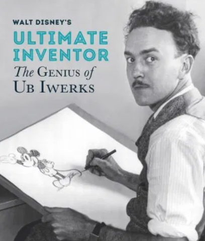
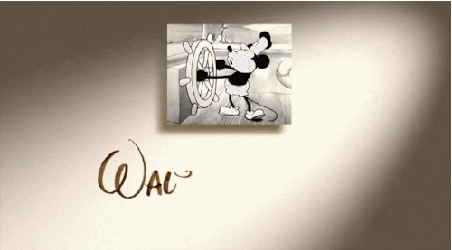
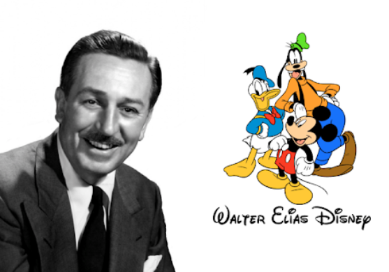

Disney's Menu
Disney's History |
Disney's Movies |
Disney's Characters |
Diseny's Movie Recommend |
Welcome to Disney World
디즈니 창립자 "월트 디즈니"의
디즈니사 창립 이야기
그림을 그리기 시작하다

1901년 미국 시카고에서 태어난 월트 디즈니는
상상력이 풍부했고 그림에 재능이 있었다.
제 1차 세계대전 종전 후 광고 업체에서 애니메이션을
제작하는 것을 시작으로 본격적으로 그림을 그리기 시작했다.
어려움을 겪다
이후 동료와 영화 애니메이션을 만들게 되었는데, 생각보다 냉담한 반응과 계약회사와의 마찰로 힘든 시간을 보냈다.
미키가 탄생하다

하지만 포기하지 않았던 디즈니는 미키라는 캐릭터를 만들어내고 흥행에 성공한다.
지금도 영화 인토로에 사용되는 증기선을 탄 미키가 이때 만들어졌다.
애니메이션 명가로 인정받다

백설공주로 첫 장편 영화를 흥행시킨 디즈니는 이후 아기코끼리 덤보 이상한 나라의 앨리스 흥행을 이어나며
애니메이션의 명가로 거듭난다.
"All our dreams can come true,
if we have the courage to presue them"
절망적인 상황에서도 포기하지 않았던 월트 디즈니는 "꿈을 쫓을 용기가 있다면 우리의 모든 꿈은 실현 될 수 있다" 고 말한다.